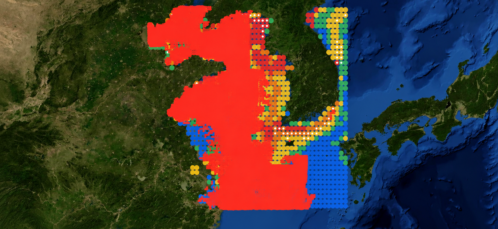

고위험 격자 (FHSI ≥ 75)
110유효 1247 / 전체 1920
어획강도·어장 환경 분석 (서해) — 조업강도·환경관계·중국어선 진입 (fish_effort)
유효 1247 / 전체 1920
적합도 ≥ 0.6
적합도 ≥ 0.6
임계 0.047 °C/km (p95)
유효 가능 70% 미만
| 선적국 | 조업시간 | 선박수 | 격자 | 비중 |
|---|---|---|---|---|
| 중국 | 2,156,907 h | 254,391 | 4,647 | 88% |
| 한국 | 191,879 h | 17,977 | 1,742 | 8% |
| 미식별 | 76,518 h | 9,034 | 2,669 | 3% |
| 일본 | 5,780 h | 750 | 251 | 0% |
| SHN | 942 h | 133 | 132 | 0% |
| NZL | 811 h | 86 | 86 | 0% |
중국 조업시간 중 FHSI ≥ 60 격자(±0.2°) 근처에서 발생한 비율. 상위 격자 236개 · 매칭 격자 956개 · 대상 2,156,907h

| 변수 | 데이터셋 | 자료 시각 (UTC) | 유효 격자 비율 |
|---|---|---|---|
| 수온 | noaacwBLENDEDsstDNDaily |
2026-10-24 12:00 |
100%
|
| 염록소-a | noaacwNPPN20VIIRSDINEOFDaily |
2026-10-23 12:00 |
100%
|
| 전선강도 | noaacwBLENDEDsstDNDaily → 공간구배 파생 |
2026-10-24 12:00 |
98%
|
| 염분 | noaacwSMAPsssDaily |
2026-10-23 12:00 |
67%
|
| 수심 | ETOPO_2022_v1_60s |
시간축 없음 |
100%
|
| 해류 | CMEMS 표층 해류 (GLOBAL_ANALYSISFORECAST_PHY uo/vo) 1/12° |
시간축 없음 |
0%
|
| 해수면고도 | CMEMS 해면고도 (GLOBAL_ANALYSISFORECAST_PHY zos) 1/12° |
시간축 없음 |
0%
|
· AIS/VMS 가 켜진 선박은 전체해역으로 신호 차단·조작 선박은 VIIRS·SAR 로 별도 탐지가 필요하다 (ODI 2020 · Cimino 2019)
· 중국 DWF 중 AIS 로 조업기록이 명확히 탐지되는 비율은 약 13% 에 불과하다 (ODI 2020)
· 염분·용존산소는 문헌에 따라 다중공선성으로 저평가·미포함되는 경향이 있어 해역·어종별 검증이 필요하다
· GFW 는 물고기 위치가 아니라 선박 조업활동을 보여주므로, 어장 가능성은 직접 관측이 아닌 지수 추정치이다
· 참조 문헌은 SAR 를 직접 사용하지 않아(광학 VIIRS 중심) SAR 결합은 별도 검증이 필요하다
대형선망 고등어 어획배분 콘텐츠 영역입니다.
탐지 알고리즘 콘텐츠 영역입니다.
학습·벤치마크 콘텐츠 영역입니다.
참고자료 콘텐츠 영역입니다.
학습 결과 콘텐츠 영역입니다.
성능·평가 콘텐츠 영역입니다.